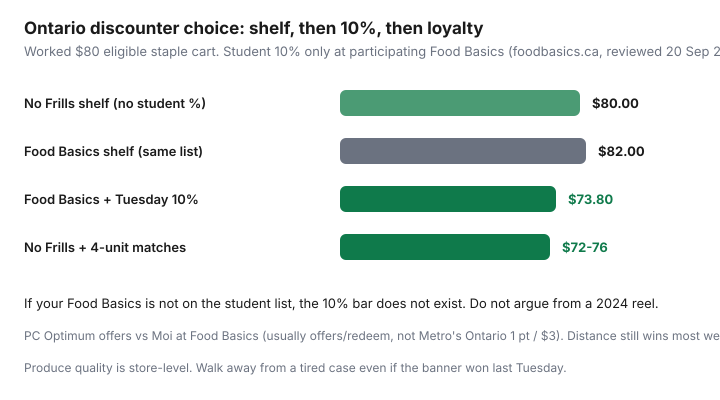

Food & Groceries · Canada
Food Basics vs No Frills in Ontario: price, loyalty, and student discount edge cases
Ontario shoppers will argue Food Basics versus No Frills until the spinach wilts. Both are discounters. Both beat Metro and Loblaws on a staple basket most weeks. The useful question is not “which brand is cheapest in Canada.” It is which parking lot you should default to, given distance, this week’s flyer, PC Optimum versus Moi, and whether your Food Basics is actually on the student-Tuesday list.
This is a decision rule with student and loyalty edge cases that Ontario Metro vs Loblaw discounters uniquely have. It is not a promise that Food Basics is always $2 cheaper on chicken. Produce is store-level. Participating student stores change. Verify foodbasics.ca/student-discount the week you move.
Disclosure: PC Financial cards and the moi RBC Visa are offer types. Saving Optimizer may earn a commission if we later add partner links. We do not currently claim Loblaw, Metro, PC Financial, or RBC partnerships. Student 10% is store-list and ID, not an app coupon we sell. Pay cards in full.
Key takeaways
- Pick a primary by distance plus documented flyer gaps — not by Reddit vibe. Re-run the 12-item list twice a year.
- No Frills: PC Optimum + Won’t Be Beat. Food Basics: Moi offers/redeem + possible Tuesday 10% for students at listed stores only.
- Food Basics’ official student page (reviewed 20 Sep 2026): 10% Tuesdays, in-store, participating locations, ID before purchase, cannot combine with other offers.
- 10% off a tired Food Basics cart can still lose to a sharp No Frills match week — and 10% off Metro is a different, often worse, game.
- Two-store Ontario loops only when Flipp shows a gap larger than the extra kilometres and the second impulse zone.
Basket price tendencies from community comparisons
Personal Finance Canada and RedFlagDeals grocery threads, plus amateur 12-item audits, keep rhyming: Food Basics and No Frills trade weeks. Neither is Walmart, neither is FreshCo, and both usually sit well below Metro and Loblaws on staples. Treat “Food Basics is always cheaper” as a hypothesis.
Worked example (labelled): an $80 eligible staple list. Food Basics shelf $82, No Frills $80. Without student discount, No Frills wins by $2 plus whatever you match. With a real Tuesday 10% at a participating Food Basics, the Food Basics till can print about $73.80 before considering matches at No Frills. That is the whole debate in one receipt — and it flips the next week when No Frills has $3.49 eggs and a chicken loss leader.

Do a 12-item audit once: same national brands or honest store-brand equivalents, unit prices, tax-in. Repeat when a store manager changes or you move. Community “detailed comparison” threads (including the PFC post cited in this brief) are starting points, not your till.
PC Optimum vs Moi/promos at Food Basics
| No Frills | Food Basics | |
|---|---|---|
| Program | PC Optimum | Moi |
| Grocery base earn | Essentially offers-only | Offers; Ontario Metro is 1 pt / $3 — Food Basics is not that |
| Redemption | Points as groceries; watch Shoppers bonus events | 500 pts = $4; redeem at Food Basics when loaded |
| Card overlay | PC Financial Mastercard if you pay in full | moi RBC Visa footnotes are Quebec-heavy — read them |
| Price match | Won’t Be Beat (local list, ~4 units) | Not the equal of Won’t Be Beat; do not assume |
Ontario Moi at Metro is already a thin ~0.27%. At Food Basics you should assume ~0% unless an offer is loaded — same framing as Moi Ontario vs Quebec. PC Optimum unboosted grocery weeks often land ~0.5–1.5% if you actually tap offers. Neither overlay saves a 10% shelf miss.
Student Tuesday edge at participating Food Basics
Food Basics’ student page (reviewed 16–20 Sep 2026 in our student discounts guide) headlines every Tuesday, in-store only, listed locations, valid post-secondary ID shown before purchase, cannot be combined with any other offer, program may change without notice.
The published participating list at review time was short (examples have included stores in Guelph, Hamilton, Kingston, Mississauga, London, Windsor — always re-open the page). Campus folklore is not the list. Digital versus physical ID: bring what the store posted.
Exclusions: alcohol, tobacco, lottery, gift cards, prescriptions, and similar. A cart of gift cards is not 10% off groceries. Food Basics says no stacking with other offers — do not fight a cashier with a Moi coupon theory on Tuesday.
Metro’s 10% student days are a separate product, sometimes daily, sometimes Tuesday, sometimes Quebec weekday windows. 10% off Metro staples can still lose to Food Basics or No Frills undiscounted. Run both receipts once.
Produce quality variability
Banner theology dies in the crisper. A No Frills can be excellent on Tuesday and tired Sunday night; Food Basics the reverse. Walk the case. Frozen vegetables are a quality strategy. If berries are dust, skip them — the $2 gap on oats will not pay for mould.
Meat: weigh it. Check cents per 100 g. Flyer chicken at either banner beats a pretty tray at Metro. Flashfood is a Loblaw-family tool (No Frills select stores), not a Food Basics fridge. Surplus at Metro-family stores is more often other apps or in-store reductions.
Choosing a primary based on distance + discounts
Decision rule:
- If one discounter is more than ~10–12 minutes extra and the other is fine on produce, default to the closer one.
- If you are a student and Food Basics is on the official Tuesday list and it is not a miserable extra commute, Tuesday becomes the weekly shop. Buy staples that keep. Do not buy a week of greens on Monday for a Tuesday discount.
- If you price-match, No Frills has the more famous written program. That can beat a non-student Food Basics most weeks.
- If both are equally close, run two Thursday Flipp lists for a month and keep the winner. Then stop switching every Saturday.
FreshCo is the third Ontario discounter (Scene+, 1¢ beat). If it is the closest box, it can be the primary — this article is the Metro vs Loblaw discounter pair, not a ban on Empire.
Two-store Ontario loop examples
- GTA student, participating Food Basics: Tuesday Food Basics staples + ID. Other weekdays No Frills only if Flipp shows a protein gap that beats the second lot. Load PC offers for that trip.
- GTA non-student, No Frills 6 minutes / Food Basics 18: No Frills weekly, Won’t Be Beat, skip Food Basics unless a documented $20 gap.
- Mid-size city, stores 4 minutes apart: one week audit both. Keep one primary. Use the second only for a loss-leader you will freeze the same day.
- Never: Metro “because Moi” for milk. Ontario 1 point per $3 is pennies.
Put the winner into the Sunday loop and argue on the internet less. The till does not care who won 2024’s Facebook thread.
Sources & date stamps
- Food Basics student discount page: Tuesdays, participating stores, ID prior to purchase, no combining with other offers (reviewed 20 Sep 2026).
- programmemoi.ca / our Moi Ontario vs Quebec guide: Food Basics offers vs Metro Ontario 1 pt/$3 (reviewed 16 Sep 2026).
- No Frills Won’t Be Beat public policy (reviewed 16 Sep 2026).
- PFC grocery comparison threads (community pattern). Ratehub grocery loyalty explainer.
Frequently asked questions
Is Food Basics cheaper than No Frills in Ontario?
Some weeks, some stores, some lists. They trade. Distance, produce quality, student 10% (listed stores only), and No Frills price matching usually decide more than a brand personality. Audit 12 items.
Does every Food Basics give students 10% on Tuesday?
No. Only participating locations on foodbasics.ca/student-discount. The public list has been short. If your store is not on it, you do not have a Tuesday 10%. The program can change without notice.
Can I stack Moi with the student discount at Food Basics?
Official Food Basics copy says the student discount cannot be combined with any other offer. Do not plan a stack. Metro’s FAQ is more permissive with Moi on Metro’s own student days — that is a different banner.
Should I switch banners for PC Optimum or Moi?
No. Pick the cheaper reliable store, then load the matching program. Ontario Moi at Food Basics is offers, not a reason to drive past No Frills.
What if FreshCo is closer than both?
Then FreshCo can be the primary: Scene+ and the 1¢ Lowest Price Guarantee. This article is the Food Basics vs No Frills decision, not a requirement to pick one of those two.